Reasoning in Language Models: chain-of-thought and everything after.
A student-led tour of how large language models learned to think out loud. The seminar starts from a single observation — that inserting intermediate steps between a question and its answer makes the answer better — and follows that thread all the way to the modern reasoning-model line (o1, DeepSeek-R1, Qwen3). Along the way it builds up the reinforcement-learning machinery that these models are trained with, from REINFORCE through TRPO, PPO, RLHF, RLOO and GRPO, then ends on efficient-reasoning tricks and the newest research directions.
§0The deck at a glance
The seminar is structured as a survey: it names what reasoning means in the context of a language model, then walks through the three families of methods that make an LM reason better — prompting (chain-of-thought), supervised fine-tuning on reasoning traces (STaR), and reinforcement learning against a reward signal. Most of the deck is spent on the RL family because that's where the recent action is: REINFORCE gives the policy-gradient template, TRPO adds a trust region, PPO clips instead of constraining, RLHF learns the reward from human preferences, RLOO removes the critic with a leave-one-out baseline, and GRPO strips it down further by using group statistics. The last third of the deck covers efficient-reasoning designs (Qwen3's thinking modes, Nemotron Nano 2's explicit budget) and a peek at what's coming next (agentic, multimodal, latent reasoning via looped transformers).
§1What reasoning is, and why LMs need it
Slides 1–7 set the stage. A one-line definition of reasoning, an appeal to the Sutton "bitter lesson" quote about scale, the canonical chain-of-thought example that motivates every method in the deck, and a benchmark (MATH-Perturb) that shows why the problem is far from solved even for GPT-4-class models.
On the slide
Student seminar for Advanced NLP Monsoon 2026 at IIIT-H, presented by Abdul Kadir Nalawala on 16 September 2026.
What to take from it
Reasoning in language models is a fast-moving topic — the term wasn't part of NLP vocabulary before 2022, and by 2025 it names an entire product category. This deck is a survey, not a canonical reference: the goal is to lay out the recipes people currently use, not to defend a definition of reasoning.
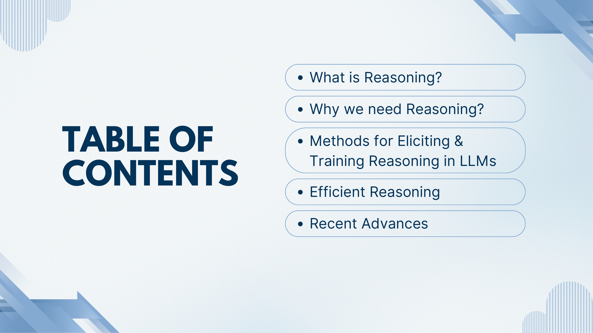
On the slide
Five acts: (1) definition, (2) motivation, (3) the methods catalogue — prompting, SFT, RL, (4) efficient reasoning, (5) recent advances.
What to take from it
The centre of gravity is act three. The prompting method (chain-of-thought) is quick to explain because it is one trick with one paper. SFT-on-traces is one more paper (STaR). The RL section is long because there is a whole family tree — REINFORCE → TRPO → PPO → RLHF → RLOO → GRPO — and each step fixes a specific problem with the previous one.
On the slide
A Sutton quote used as an epigraph.
Why it's here
Sutton is the co-author of the reinforcement-learning textbook that the RL section leans on, and the author of The Bitter Lesson — the thesis that general methods leveraging computation always eventually beat handcrafted priors. The seminar is broadly in that spirit: don't hand-engineer reasoning into a model; give it a training procedure and a reward, and let it discover its own reasoning strategy. That framing pays off two sections later when we get to RL.
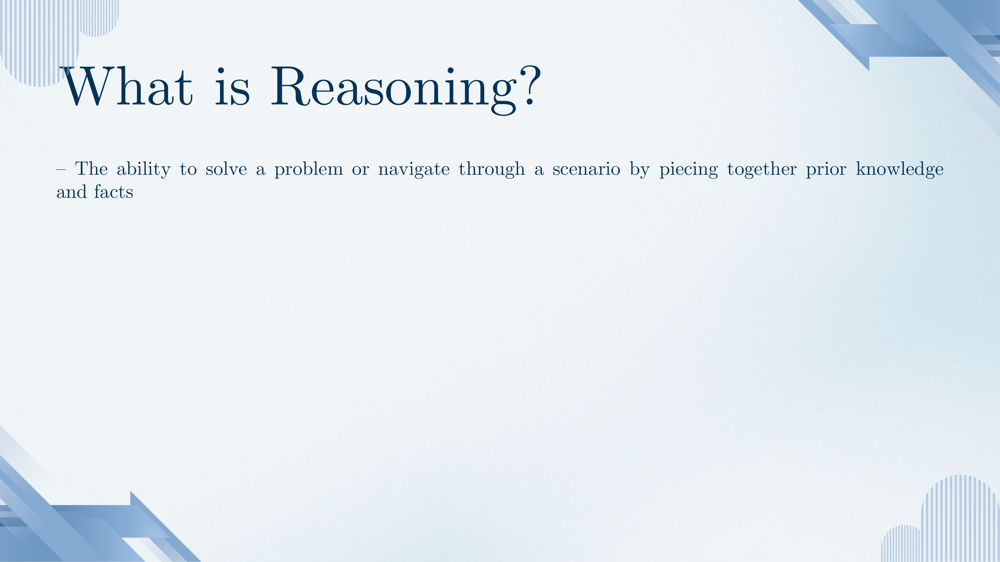
On the slide
Reasoning defined operationally: the ability to solve a problem or navigate through a scenario by piecing together prior knowledge and facts.
What to take from it
Note what this definition does not claim. It doesn't require the model to be conscious, or to follow the rules of formal logic, or to be right for the right reasons. It just says: given a problem, chain together things you already know to reach an answer. That's deliberately weak — it lets chain-of-thought count as reasoning even when the intermediate steps are wrong, as long as they're the mechanism by which the final answer becomes more accurate.
Throughout the deck, "reasoning" means producing intermediate steps that improve the final answer, not any deeper philosophical property. Every method in the deck is a different way to elicit or train those intermediate steps.
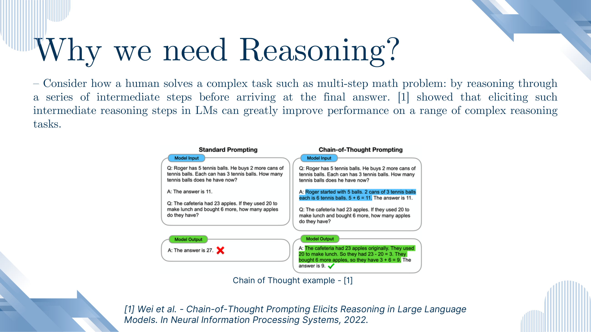
On the slide
The famous side-by-side from Wei et al. (2022). Given a two-step word problem, a standard-prompted LM answers 27 for the cafeteria question (wrong). With a few-shot example that writes out the reasoning, the LM answers 9 (right), and its own output now contains "23 − 20 = 3. They bought 6 more apples, so they have 3 + 6 = 9."
Why this figure matters
This is the picture that launched the whole reasoning agenda. Humans don't solve multi-step math by pattern matching against a memorised answer — they think through intermediate steps. If you let an LM do the same in its output, its accuracy on multi-step problems jumps sharply. Every other method in this deck is either an improvement on CoT (get better traces via SFT) or a way to reward the LM for producing good CoT-style outputs via RL.
Mechanically, the LM is a next-token predictor. When you force intermediate arithmetic to appear in its output, the final answer is conditioned on tokens that already represent the partial computation — the model gets to use its own scratch work as context for producing the last number. Without CoT, it has to compute the answer in one forward pass, in a fixed number of hidden layers.
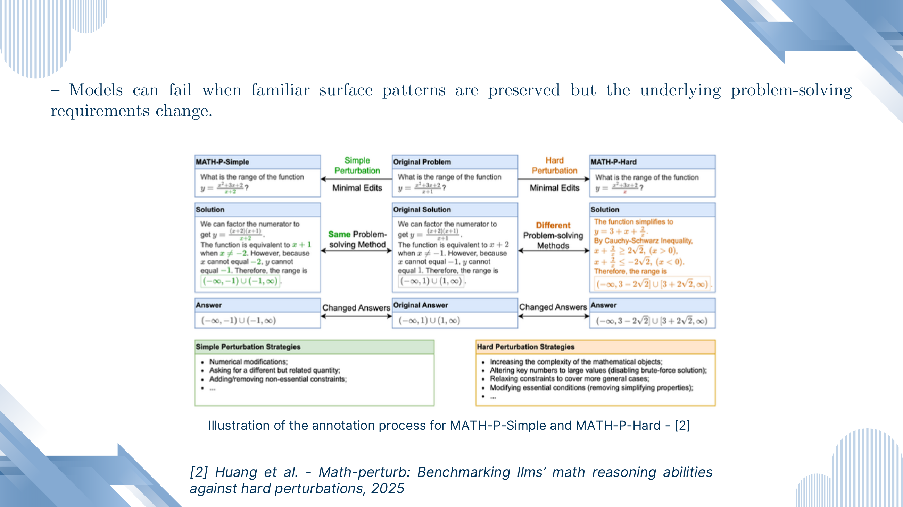
On the slide
The MATH-Perturb benchmark (Huang et al., 2025). Take a MATH-competition problem, then make two edits: an easy one that keeps the same solution method (numbers or wording change), and a hard one that looks nearly identical but demands a genuinely different method (e.g., a factorisation trick no longer applies).
What to take from it
This is the litmus test for whether a model is reasoning or pattern-matching. Pattern matching is fine on MATH-P-Simple (surface still triggers the right template) but crashes on MATH-P-Hard (surface still triggers the same template, but the template no longer works). A model that has actually internalised a reasoning procedure should degrade far less. The next slide quantifies it.
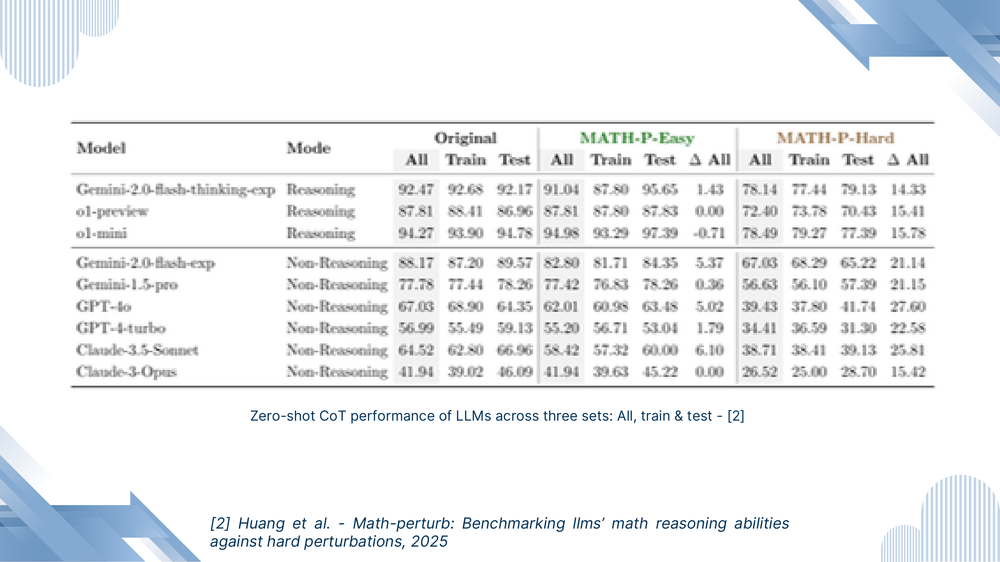
On the slide
Zero-shot chain-of-thought accuracy on the three splits (Original, MATH-P-Easy, MATH-P-Hard) for a mix of reasoning models (o1-preview, o1-mini, Gemini-2.0-flash-thinking) and non-reasoning models (GPT-4o, Claude-3.5-Sonnet, Claude-3-Opus, etc.). The last column (ΔAll) is the drop from Original to Hard.
What to take from it
Two things. First, even the best model in the table (Gemini-2.0-flash-thinking) loses 14 points from Original to Hard — nobody has solved this. Second, the drop for reasoning-tuned models (14–16 pts) is meaningfully smaller than for non-reasoning ones (21–27 pts). The extra training is doing something; it just isn't full immunity. That headroom is the motivation for the rest of the deck.
"Reasoning model" in this table is a label for models explicitly trained with RL on reasoning traces (o1-series, Gemini-thinking). It is not a claim about anyone's subjective cognition. Read the pill as an architectural / training-recipe tag.
§2Prompting for reasoning: chain-of-thought
The first family of methods requires zero training changes: just ask the model to think step by step. Slides 8–9 formalise the trick and show its most famous property — that it only kicks in above a certain model scale.
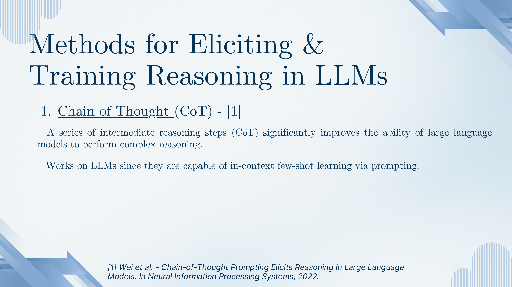
On the slide
Chain-of-Thought (CoT) prompting: give the LM a few-shot exemplar in which the answer is preceded by an explicit reasoning trace. The model then imitates the format on new questions and produces its own trace before answering.
What to take from it
CoT is entirely a prompting technique — no weights change, no data collection, no training run. It leverages a property large LMs already have: in-context learning. Show the model a few examples of the format you want and it generalises. This is why CoT is often the first thing anyone tries: it's free.
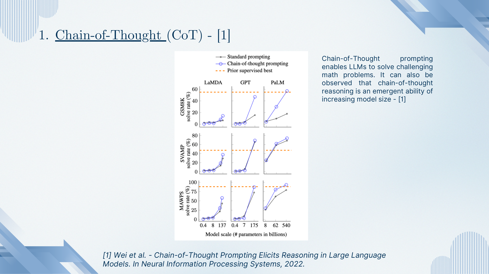
On the slide
Solve rates on GSM8K, SVAMP and MAWPS as model size grows, for LaMDA, GPT-3 and PaLM. At small scale, CoT (blue) is no better than standard prompting (black). At large scale, CoT suddenly outperforms it — often by 40+ points — and beats the prior supervised state-of-the-art (dashed line).
What to take from it
CoT is what the community calls an emergent ability: a capability that appears roughly discontinuously as you scale. A small model produces intermediate steps but they're wrong, so writing them down doesn't help. A big model's intermediate steps are usually right, so conditioning the final answer on them helps a lot. This is one of the earliest pieces of concrete evidence that scale changes what prompting can do, not just how well the model does what it already does.
CoT is not something you teach a language model. It's something a large-enough language model can already do, and you just have to elicit it with the right prompt format. That's why the next question is: if bigger models reason spontaneously, can we train smaller models to imitate them?
§3Supervised fine-tuning on reasoning traces (STaR)
The second family bakes the reasoning ability into the weights. Instead of relying on the LM to produce good traces at inference, you collect examples of good traces and fine-tune on them. Slides 10–11 introduce the trick everyone uses to collect those traces cheaply: have the model produce its own, keep the ones that got the right answer, and iterate.
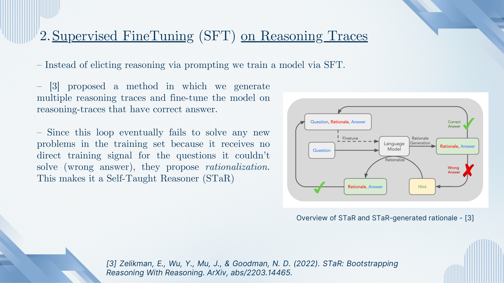
On the slide
STaR (Self-Taught Reasoner; Zelikman et al., 2022). The recipe:
- Ask the LM to solve each problem in the training set, producing a rationale and an answer.
- Keep only the (rationale, answer) pairs where the answer is correct.
- Fine-tune the LM on those pairs.
- Repeat.
Because step 2 filters out failures, the loop never gets a training signal for the questions the model can't yet solve. STaR's fix — called rationalisation — is to feed those failed questions back with the ground-truth answer attached, have the model write a rationale that leads to that answer, and add those reverse-engineered rationales to the training pile.
Why this is clever
Handwriting high-quality reasoning traces at scale is expensive. STaR's insight is that you don't need to: the model can generate many candidate traces cheaply, and a correctness check on the final answer is enough signal to filter the good ones. Rationalisation extends the coverage to hard problems. The whole loop is a poor person's RL — same idea (roll out, keep the wins) but implemented as supervised fine-tuning on filtered rollouts.
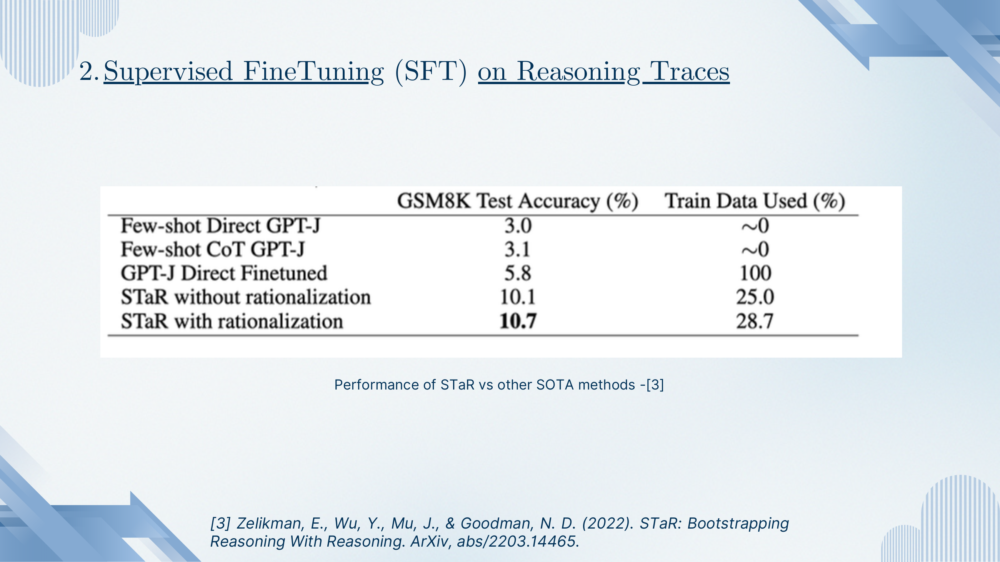
On the slide
GSM8K accuracy for GPT-J variants. Few-shot direct: 3.0%. Few-shot CoT: 3.1% (CoT doesn't help at this scale — see slide 9). Direct fine-tuning on the whole training set: 5.8%. STaR: 10.1%, and 10.7% with rationalisation. Note the "train data used" column — STaR trains on ~25–29% of the data (only what it could self-solve) but nearly doubles the accuracy of direct fine-tuning.
What to take from it
You don't need more data; you need better-quality data. A model taught to imitate its own successful reasoning trajectories generalises better than one taught to memorise the ground-truth answers. This is the empirical seed of every RL-for-reasoning method that follows: reward the good rollouts, ignore or down-weight the bad ones.
STaR is filtering by correctness with no probabilistic accounting for how likely the model was to sample the good trace. Reinforcement learning is the general framework for doing this properly — assigning a reward, estimating the gradient of expected reward with respect to policy parameters, and updating. The next six sections build that machinery.
§4An RL primer for language models
Slides 12–17 install the reinforcement-learning vocabulary the rest of the deck runs on. Agent, environment, state, action, policy, reward, trajectory — the classical Sutton & Barto setup, mapped one-to-one onto the LM setting. Then the policy-gradient objective and its most classical estimator: REINFORCE.
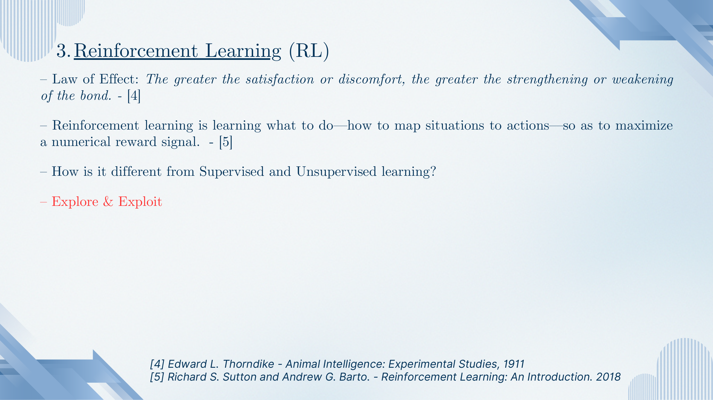
On the slide
Two definitions: Thorndike's Law of Effect (the older behavioural one — reward strengthens the response, punishment weakens it) and Sutton & Barto's algorithmic one (learn a mapping from situations to actions that maximises expected cumulative reward). Plus the trailer for the two ideas that differentiate RL from supervised learning: no labels on individual actions, only a scalar reward on outcomes, and the explore–exploit trade-off.
What to take from it
For an LM, the "action" is generating the next token and the "reward" is a score given to the completed response. That's a much sparser signal than the per-token cross-entropy loss used in pre-training — you only find out at the end whether the whole answer was any good. RL's whole job is to turn that sparse end-of-trajectory reward into a per-token gradient update.
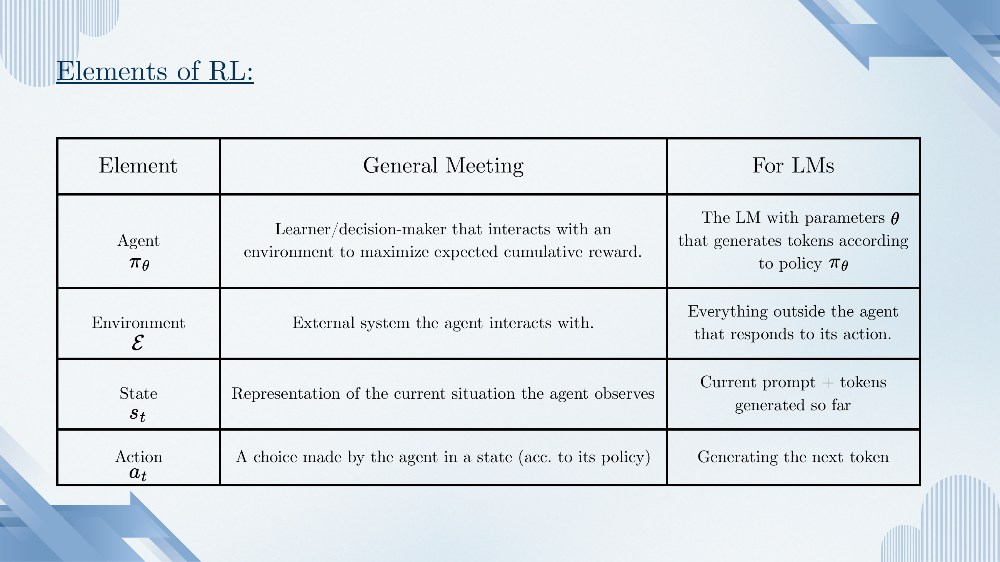
The mapping
Every symbol has an LM analogue. The agent is the LM itself, parameterised by θ. The environment is the input prompt plus anything else the LM interacts with. The state at step t is the prompt concatenated with everything the LM has generated so far — the KV cache, effectively. The action is picking the next token from the vocabulary.
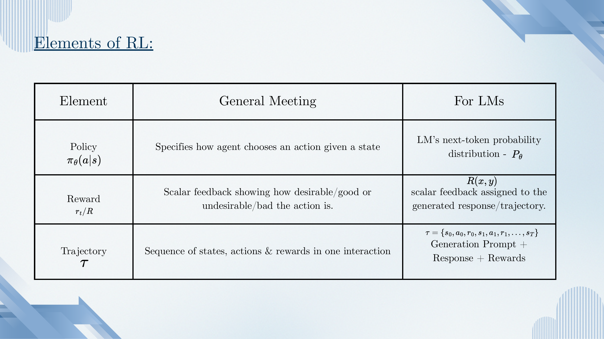
The mapping (continued)
The policy is just the LM's next-token distribution . The reward scores the entire response to a prompt — end-of-trajectory only, in the plain vanilla setup. A trajectory is the whole (state, action, reward) sequence: prompt + generated response + reward.
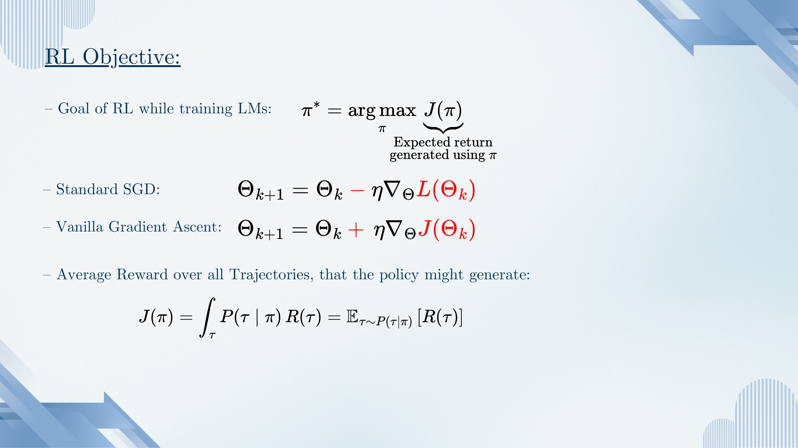
On the slide
The optimal policy maximises the expected return . Whereas supervised learning uses SGD to minimise a loss (step in the negative gradient), RL uses gradient ascent on (step in the positive gradient — because we want reward to go up, not down).
What to take from it
The whole optimisation game reduces to: estimate the gradient of expected reward with respect to policy parameters, take a step in that direction, repeat. The catch is that "expected reward" is an integral over every possible sequence the policy could generate — astronomically large in an LM setting. The next two slides show how to estimate it without enumerating everything.
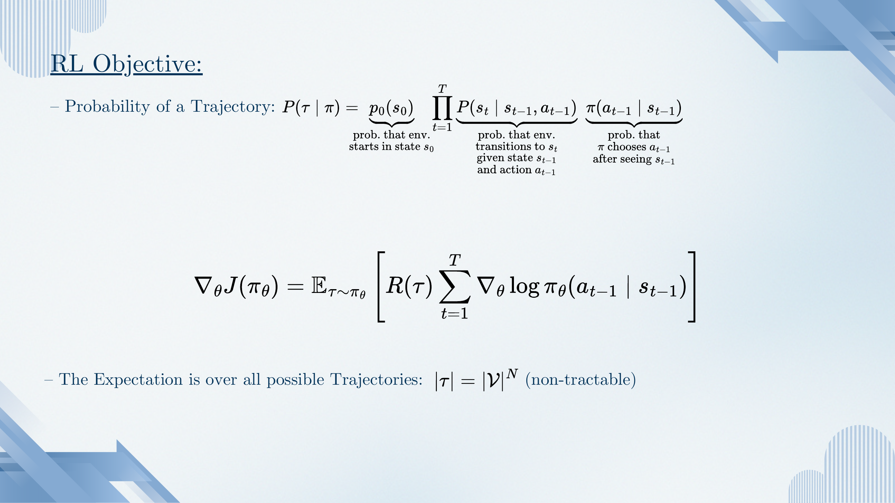
On the slide
The trajectory probability factorises into (a) the initial state distribution, (b) the environment's transition probabilities, and (c) the policy's action probabilities. Applying the log-derivative trick gives the policy-gradient identity: .
Why this identity is the whole trick
The environment's transition probabilities depend on things we can't differentiate through (external systems, humans, real-world dynamics). But the log-derivative trick pushes the gradient inside the expectation and onto the part we can differentiate — the log of the policy. The reward becomes just a scalar weight. That's why every method in the rest of the deck is a variation on "weight the log-prob gradient by some scalar". What changes across methods is what scalar — raw reward, advantage, clipped importance-ratio times advantage, etc.
The vocabulary size raised to sequence length is unimaginably large — you cannot enumerate trajectories. The next slide's answer: don't enumerate, sample.
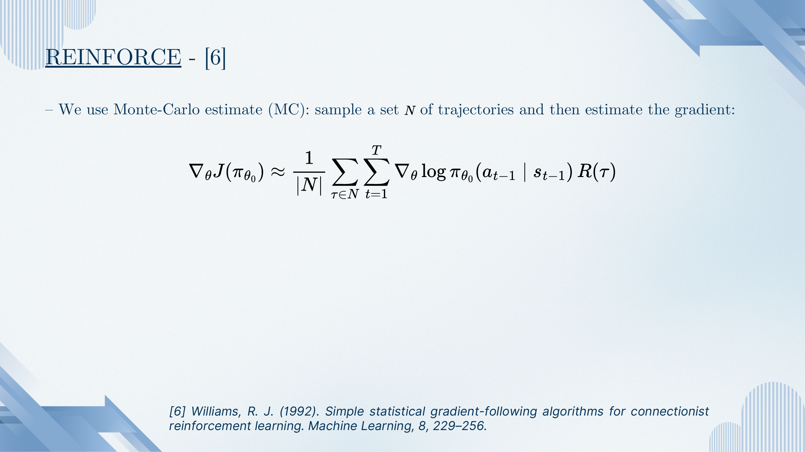
On the slide
REINFORCE (Williams, 1992). Sample trajectories from the current policy, and estimate the intractable expectation by the sample average. That's it — one line.
What to take from it
REINFORCE is the simplest possible policy-gradient estimator, and it's unbiased: on average, it points in the right direction. But it has notorious high variance — the reward multiplies every per-step log-prob gradient, so one unusually lucky or unlucky trajectory dominates the batch. Everything from TRPO onwards is a way to reduce that variance, or to make sure the update doesn't send the policy careening too far from a working region of parameter space.
REINFORCE is your baseline mental model. If you understand REINFORCE, everything that follows (TRPO, PPO, GRPO) is just REINFORCE plus tricks — better baselines, trust regions, clipping, group statistics. The core update is always: log-prob gradient times a scalar weight.
§5TRPO and PPO: keeping updates small
REINFORCE's two problems — high variance and unconstrained step size — are what TRPO (Schulman et al., 2015) and its more practical successor PPO (Schulman et al., 2017) fix. Slides 18–23 introduce both, plus the value/advantage vocabulary that PPO needs.
On the slide
Section marker for TRPO — Trust Region Policy Optimization. Content is on the next slide.
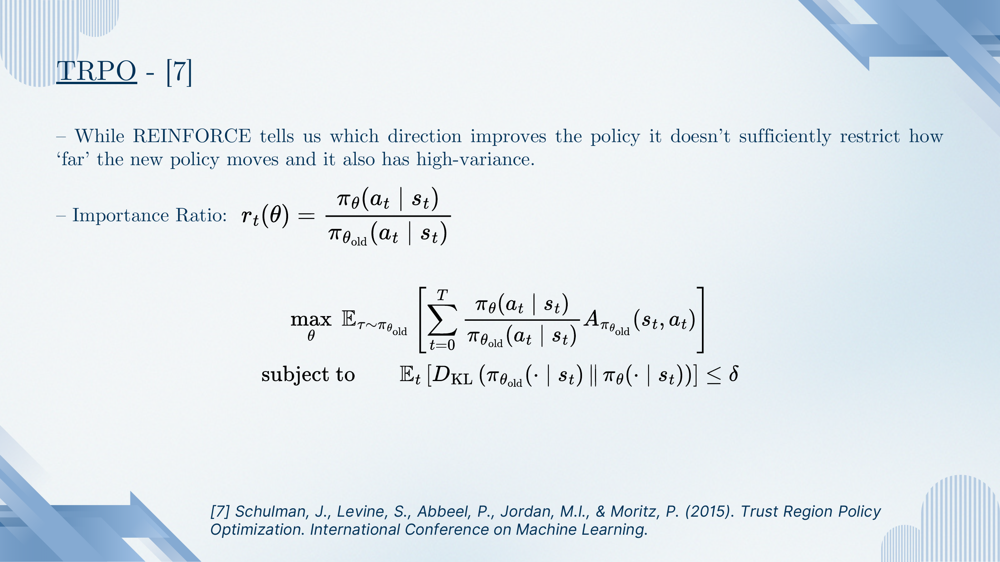
On the slide
TRPO replaces the log-prob gradient with an importance ratio between the candidate new policy and the current one, times the advantage (defined on slide 20). Then it imposes a hard KL-divergence constraint: the new policy's per-state distribution must not drift more than δ from the old one.
Why the trust region
Without a constraint on step size, a policy-gradient update can put you in a region where the samples you already collected are no longer representative of what the new policy would do. The KL constraint says: only move as far as your on-policy samples remain a reasonable approximation. It works, but the constrained optimisation is painful to solve every step. PPO's contribution is a much cheaper approximation of the same idea.
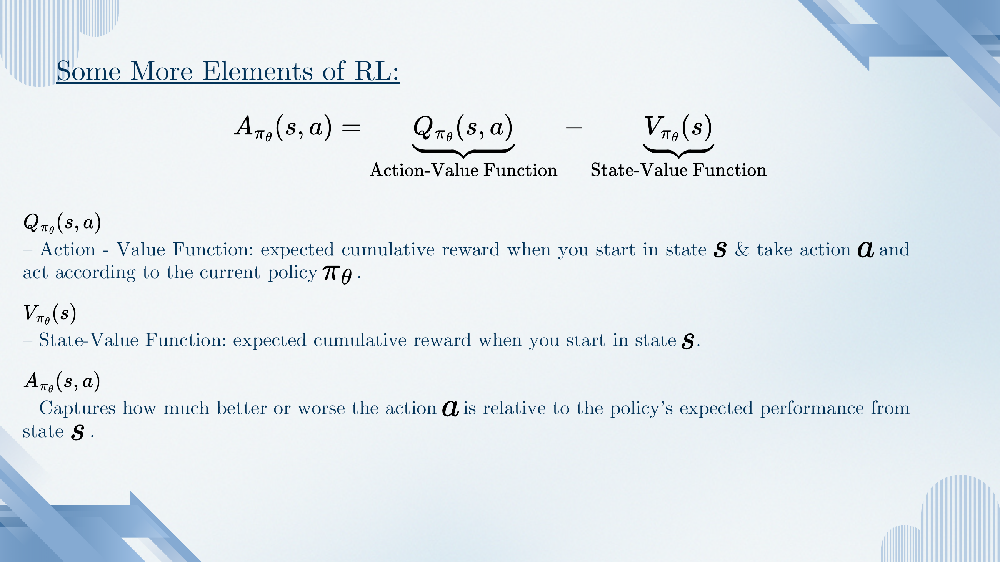
On the slide
Three standard RL quantities, needed by every method from here on:
- Q(s, a) — expected cumulative reward if you start in state s, take action a, then follow the current policy.
- V(s) — expected cumulative reward if you start in state s and follow the current policy (average over all first actions).
- A(s, a) = Q(s, a) − V(s) — the advantage: how much better than the policy's own average this particular action is.
Why advantage, not raw reward
The whole point of subtracting V is variance reduction. Instead of asking "was this action followed by a big reward?" (which conflates the action with everything else the policy did next), we ask "did this action do better than the policy's average from here?". The answer has much lower variance across trajectories. Every modern policy-gradient method uses some estimate of advantage in place of raw reward.
On the slide
Section marker for PPO — Proximal Policy Optimization. Content on the next two slides.
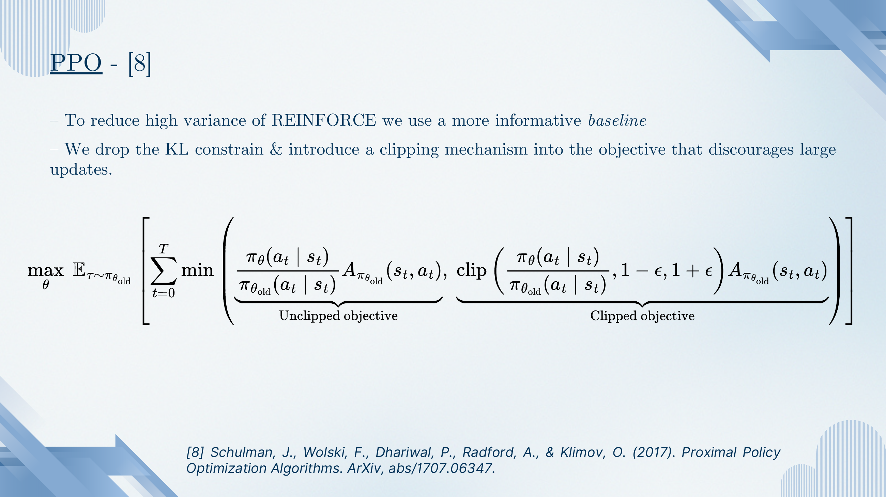
On the slide
PPO keeps TRPO's importance-ratio idea but throws out the KL constraint. Instead it takes the minimum of two things: the unclipped importance-ratio-weighted advantage, and the same quantity with the ratio clipped into .
Why min-of-two-terms works
Think of it as a pessimistic update. If the advantage is positive and the ratio has gone above , the clipped term caps the reward — no incentive to push the ratio further. If the advantage is negative and the ratio has gone below , same thing in the other direction. The result: the policy is not encouraged to drift further from the old one once it's already moved a certain amount. All the benefits of TRPO, none of the constrained-optimisation cost.
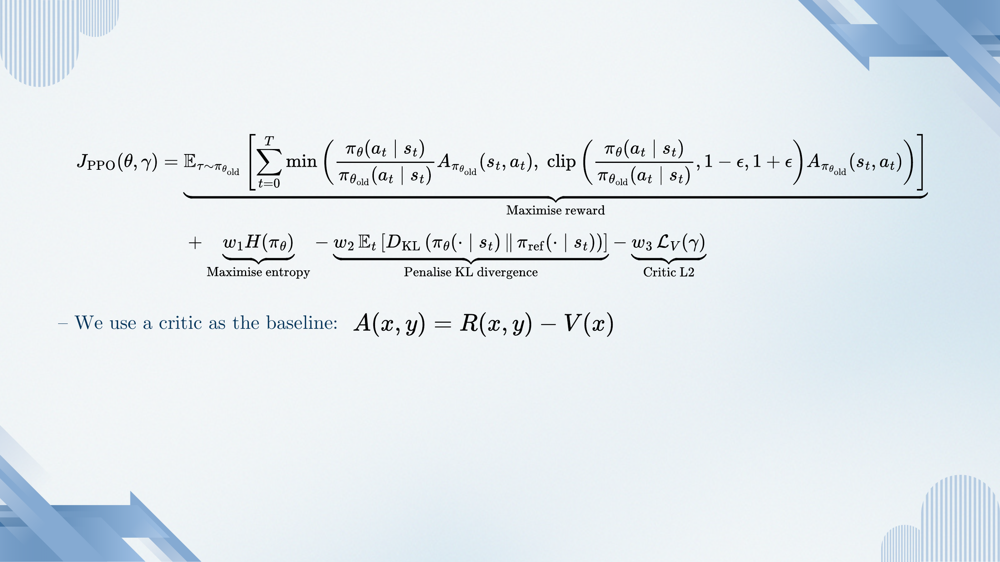
On the slide
The full PPO training objective, as actually used. Four terms:
- The clipped reward surrogate from slide 22.
- + w₁ · H(πθ) — an entropy bonus, to keep the policy exploring rather than collapsing onto a single high-reward mode.
- − w₂ · KL(πθ ‖ πref) — a KL penalty against a reference policy (usually the base SFT model). Keeps the fine-tuned model from forgetting how to be a language model.
- − w₃ · LV — L2 loss on the critic (value function) that estimates so we can form advantages .
Why the extras matter
Without entropy, the policy collapses. Without the KL penalty, the fine-tuned LM will discover ways to satisfy the reward that are gibberish to a human (reward hacking). Without the critic, you're back to REINFORCE-level variance. PPO plus these three regularisers is the workhorse RL algorithm that trained InstructGPT, ChatGPT and a large fraction of every RLHF pipeline until GRPO.
The critic is a whole second neural network, usually the same size as the policy. That doubles memory and adds one training loop. Removing the critic — cheaply — is one of the reasons GRPO exists.
§6RLHF: preferences as reward
Everything up to here assumed a reward function. But there is no automatic reward for "is this English natural, helpful and not offensive?". Slides 24–29 explain how to learn a reward from human preference comparisons — the RLHF pipeline that made ChatGPT chattable.
On the slide
Section marker for RLHF — Reinforcement Learning from Human Feedback. Ouyang et al., 2022 (InstructGPT).
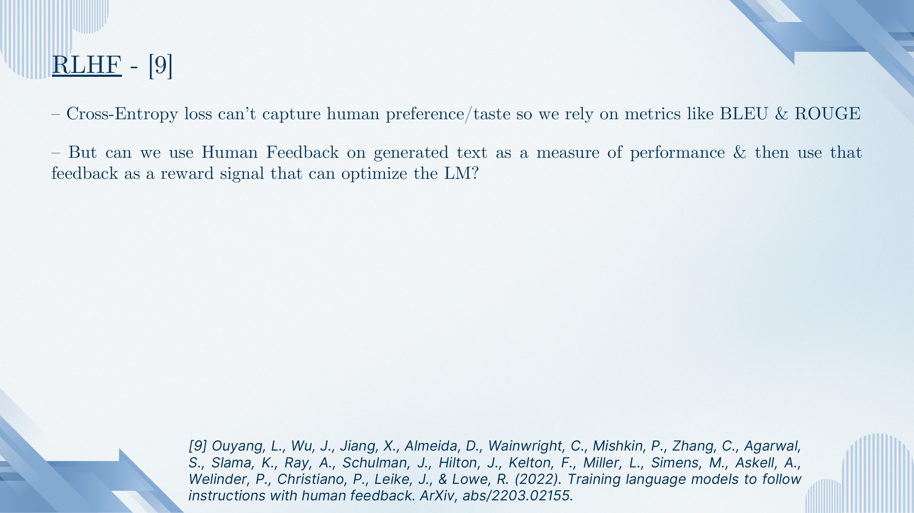
On the slide
Standard supervised training optimises token-level cross-entropy — how likely was the ground-truth next token? That's fine for language modelling but a bad proxy for whether the whole response is helpful, harmless, honest. Metrics like BLEU and ROUGE were the older fix; they're weak and correlate poorly with human judgment. RLHF replaces them with a learned reward model that is literally trained to match human preferences.
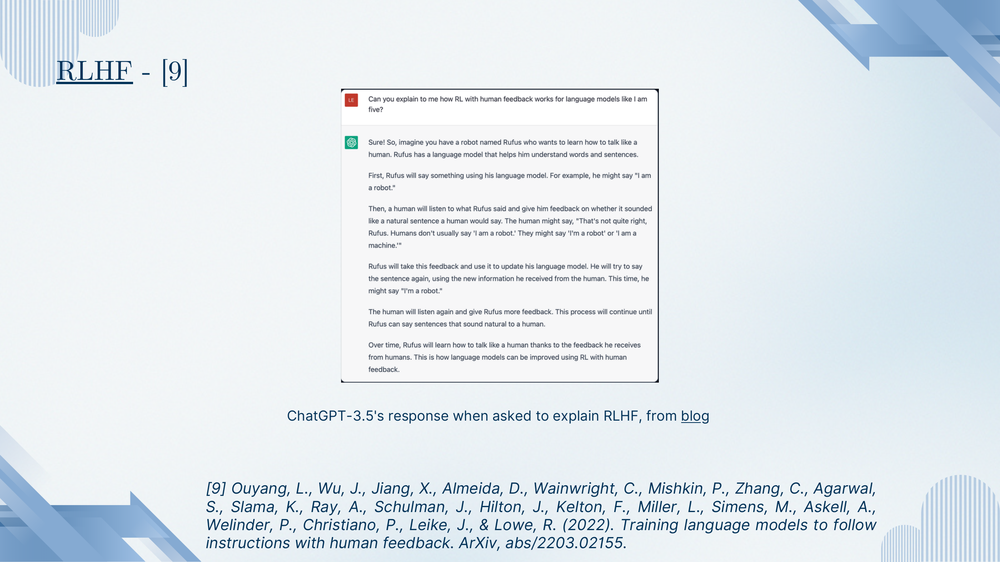
On the slide
ChatGPT-3.5's own "explain like I'm five" version of RLHF, inserted for lightness: a robot says something, a human says "not quite", the robot updates, the robot tries again, repeat.
What to take from it
The kindergarten summary is basically right. The only bit missing is that a real RLHF pipeline doesn't ask a human at every RL step — that would be infeasibly slow. It collects preference judgments once, trains a reward model to imitate them, then uses PPO against that surrogate. The next slide shows the three-step pipeline.
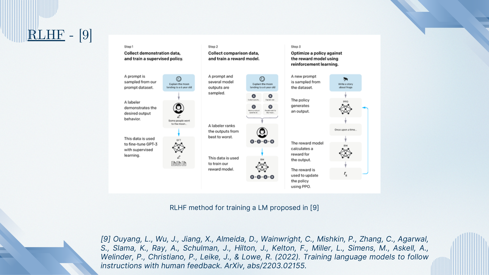
On the slide
The canonical three-step recipe:
- SFT. Fine-tune a base LM on human-written demonstrations of the desired behaviour ("here is how a helpful assistant would answer this").
- Reward model. For each prompt, sample several outputs from the SFT model; have a human rank them best-to-worst; train a small neural network to score outputs consistently with those rankings.
- RL. Optimise the SFT policy against the reward model using PPO, with a KL penalty back to the SFT policy (from slide 23's objective) so it doesn't drift into nonsense.
Why the split into three steps
SFT teaches the format. The reward model captures human preferences that are hard to spell out. PPO propagates those preferences into the policy via reinforcement learning. Each step has a different data type (demonstrations, preferences, rollouts) and each addresses a different failure mode of the step before it. That's why the pipeline stuck.
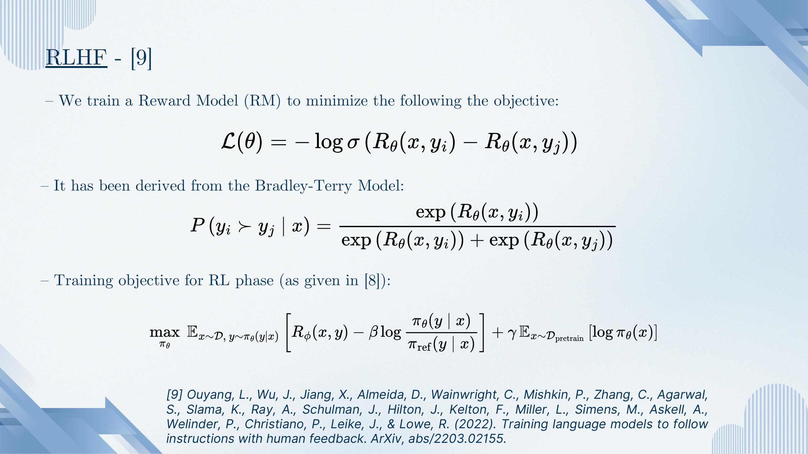
On the slide
The reward-model loss is negative log-likelihood under the Bradley-Terry preference model: given a pair where humans preferred , maximise the probability that scores it higher. This is the classic sigmoid-of-difference loss used for pairwise ranking.
Why Bradley-Terry
Humans are much better at comparing two outputs than at giving absolute scores. Bradley-Terry converts a pile of "A is better than B" judgments into an absolute scalar scoring function — one that assigns higher numbers to preferred outputs. That scalar is the reward the RL phase then maximises.
The RL-phase objective at the bottom of the slide is literally the PPO objective plus a KL penalty to and (optionally) a small language-modelling loss on pre-training data. That last term is the PPO-ptx variant, used in InstructGPT to preserve capabilities that the preference dataset didn't cover.
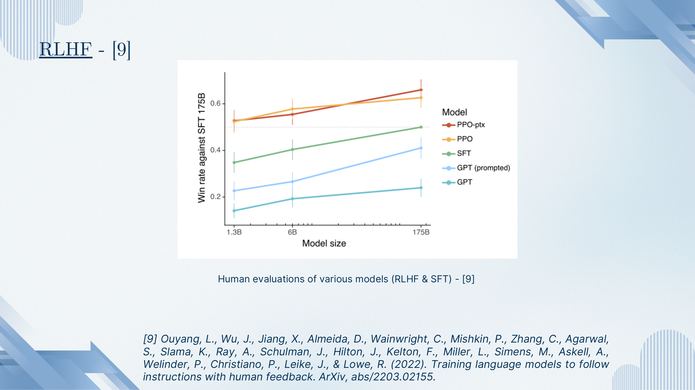
On the slide
Human win-rate versus the 175B SFT model, plotted as model size grows. PPO and PPO-ptx (top two lines) both cross the 50% line — even a 1.3B PPO-trained model is judged as good as a 175B SFT model. Vanilla GPT (prompted or not) trails far behind.
What to take from it
RLHF isn't just a marginal quality bump — it's roughly a 100× compression on parameters at fixed human preference. That's the empirical result that made every serious LM deployer adopt the recipe. It's also the setup that reasoning-focused RL (GRPO, DeepSeek-R1) inherits: same training loop, but the reward is correctness instead of preference.
§7RLOO: a critic-free baseline
PPO needs a critic network to estimate . Training and storing a second big network is expensive. Slides 30–32 introduce a REINFORCE variant that gets a baseline for free: sample K responses per prompt and use the mean of the other K−1 as the baseline. That's RLOO (Kool et al., 2019).
On the slide
Section marker for RLOO — REINFORCE Leave-One-Out. Kool, van Hoof & Welling, ICLR 2019 — cheekily titled "Buy 4 REINFORCE Samples, Get a Baseline for Free!".
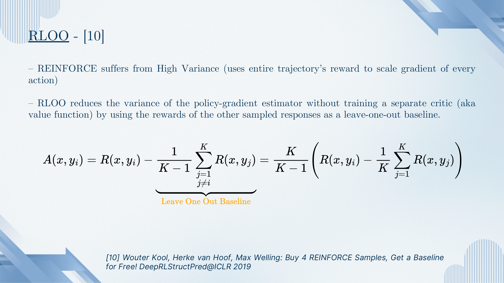
On the slide
Sample K responses to the same prompt. For each response yi, subtract from its reward the mean of the other K−1 responses' rewards. That difference is a valid, low-variance estimate of the advantage — with no critic in sight.
Why leave-one-out is unbiased
The subtracted quantity doesn't depend on yi itself, so it doesn't bias the gradient (the expectation of the constant times the log-prob gradient is zero). What it does do is remove a lot of variance that comes from prompt-level difficulty — hard prompts have low reward for everyone, easy prompts have high reward for everyone, and the leave-one-out baseline absorbs both.
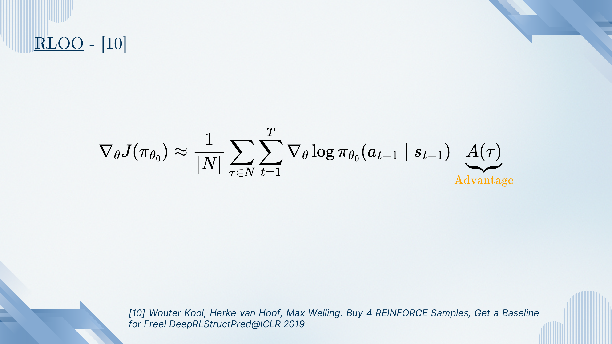
On the slide
The full RLOO gradient is REINFORCE's gradient with advantage (leave-one-out) instead of raw reward.
What to take from it
This is the pattern that GRPO will generalise. Cheap variance reduction without a critic, by pooling information across a small group of samples that share a prompt. Once you see this, GRPO's group-relative advantage becomes almost obvious — it's the same idea with the standard deviation added back in.
Sampling multiple responses per prompt gives you free baselines. You already need the samples for the gradient; using them for the baseline as well costs nothing extra and cuts variance sharply.
§8GRPO and the DeepSeek-R1 line
Slides 33–36 arrive at the algorithm that trained DeepSeek's R1-series and became the default RL choice for reasoning models in 2024–25: Group Relative Policy Optimization (Shao et al., 2024). GRPO combines PPO's clipping with RLOO's critic-free group baseline, adds a KL to a reference model, and uses a simple rule-based reward for math and code.
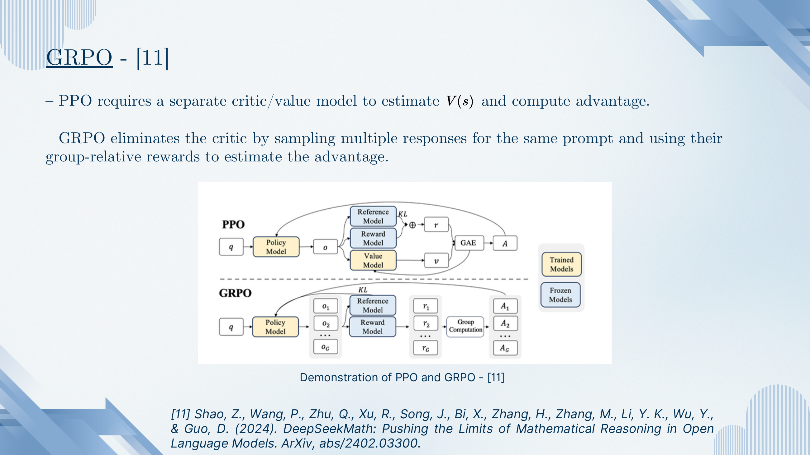
On the slide
The PPO-versus-GRPO block diagram. PPO has a Reference Model (for KL), a Reward Model, a Value Model (the critic), and applies GAE to compute the advantage. GRPO drops the Value Model entirely: it samples G outputs per prompt, gets G rewards, and computes an advantage per output from the group statistics.
Why this matters practically
The critic in PPO is often the same size as the policy — 7B, 70B, whatever the base model is. Removing it halves the memory needed during RL training. For DeepSeek that meant being able to train a much larger reasoning model on the same hardware. This engineering point is a big part of why GRPO caught on.
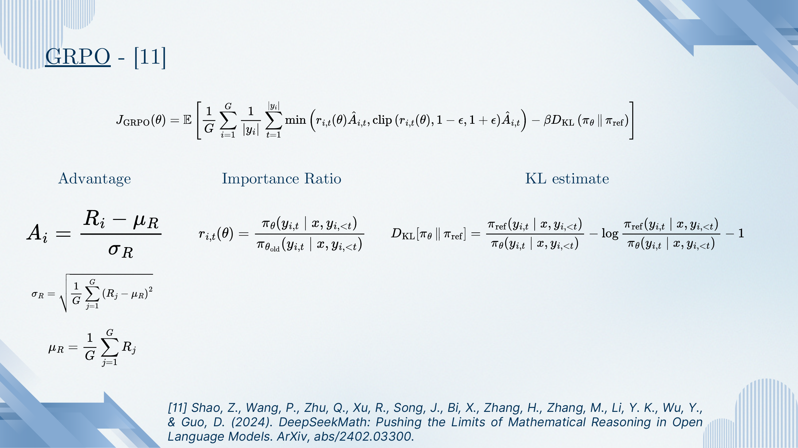
On the slide
The full GRPO objective, term by term:
- Advantage: — standardise each response's reward against the group (mean and std over the G samples).
- Importance ratio: the PPO ratio, per token, between the new and old policies.
- Clipped objective: same trick as PPO.
- KL to reference: a per-token divergence penalty back to πref, preventing drift.
Why standardise, not just centre
RLOO centres. GRPO standardises. Dividing by σR makes the advantages comparable across prompts of wildly different difficulty — a hard prompt might have all rewards near zero with tiny spread, an easy prompt might have all near one with tiny spread; standardising re-scales both to unit variance so the gradient magnitudes are commensurate.
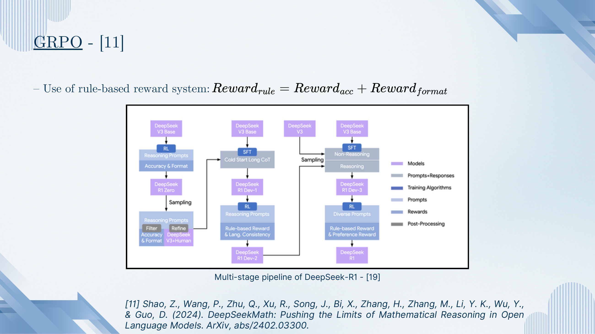
On the slide
Two things: (1) the reward used to train R1 is a
rule-based sum — an accuracy check (does the boxed
answer match?) plus a format check (are the
<think>/</think> tags
present?). No learned reward model. (2) The end-to-end
multi-stage pipeline that produced DeepSeek-R1: cold-start
SFT on long chains of thought, then RL, then more SFT, then
more RL, alternating.
Why rules, not preferences
For math and code, correctness is checkable automatically — you don't need a human. That removes the biggest bottleneck in RLHF (collecting preference data) and lets you scale RL training essentially arbitrarily. This is probably the single biggest reason reasoning models moved so fast in 2024–25: the reward was free.
Rule-based rewards only work when correctness is checkable. For creative writing, dialogue, or open-ended reasoning without a boxed answer, you're back to needing human preferences (RLHF) or LLM-as-judge (which has its own biases).
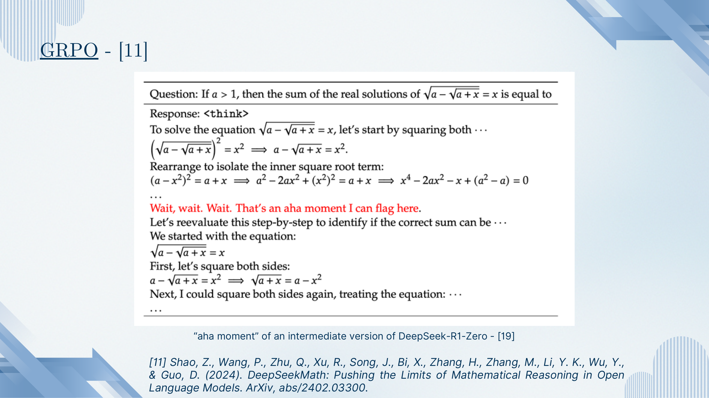
On the slide
A transcript from an intermediate DeepSeek-R1-Zero checkpoint. Mid-derivation, the model says "Wait, wait. Wait. That's an aha moment I can flag here. Let's reevaluate this step-by-step to identify if the correct sum can be…" and restarts.
Why this is remarkable
Nobody trained the model to say "wait, aha". The behaviour emerged from RL against a correctness reward. Because back-tracking increases the chance of a right final answer, gradient pressure pushed the policy toward interruptions like this. It's a live demonstration of the Sutton quote from slide 3: give the system a general enough optimiser and enough compute, and it discovers its own strategies — including ones the designers never anticipated.
This is the single most-cited moment from the DeepSeek-R1 paper, and rightly so. It's the clearest evidence that the RL-for-reasoning recipe is doing something qualitatively different from the SFT recipe — teaching the model when to doubt itself, not just how to imitate a good trace.
§9Efficient reasoning: budget and mode control
Long chains of thought are expensive. Slides 37–40 look at how modern reasoning models let you pay less for easy questions — a thinking-mode toggle in Qwen3, an explicit token budget in NVIDIA's Nemotron Nano 2.
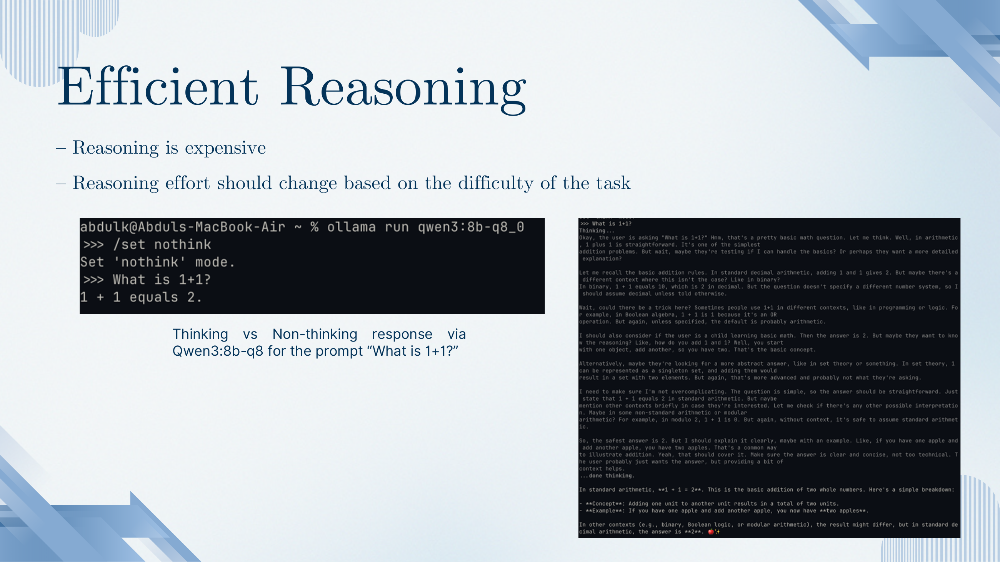
On the slide
Two side-by-side terminals running Qwen3 8B on "What is 1+1?". In nothink mode: three tokens — "1 + 1 equals 2." In default thinking mode: many paragraphs of internal monologue about arithmetic, binary, Boolean logic, then the same answer.
What to take from it
Chain-of-thought is a hammer that turns every question into a nail — including "what is 1+1?". At scale, that costs money and latency. The natural next question is whether we can let the model decide how much to think, or at least let the user set a budget.
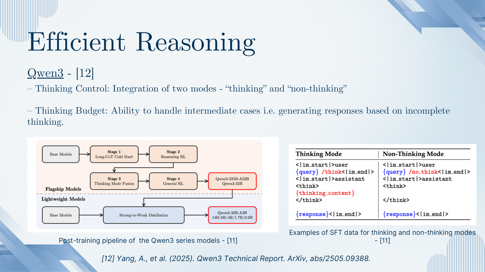
On the slide
Qwen3's design (Yang et al., 2025). Two knobs:
- Thinking control. User adds
/thinkor/no_thinkto their query; the model produces either a full<think>…</think>block or an empty one before answering. The SFT data explicitly includes both patterns so the model learns to obey the marker. - Thinking budget. The model can be cut off mid-thought and asked to produce its best answer from an incomplete chain, and it degrades gracefully.
Achieved via a four-stage post-training pipeline that alternates SFT and RL, then distils from the flagship into smaller variants.
Why unify both modes in one model
Serving two models (a fast one and a reasoning one) doubles inference infrastructure. A single model with a runtime switch is much cheaper. Qwen3's design says: bake both behaviours in, controlled by a text marker in the prompt. This is now a common pattern.
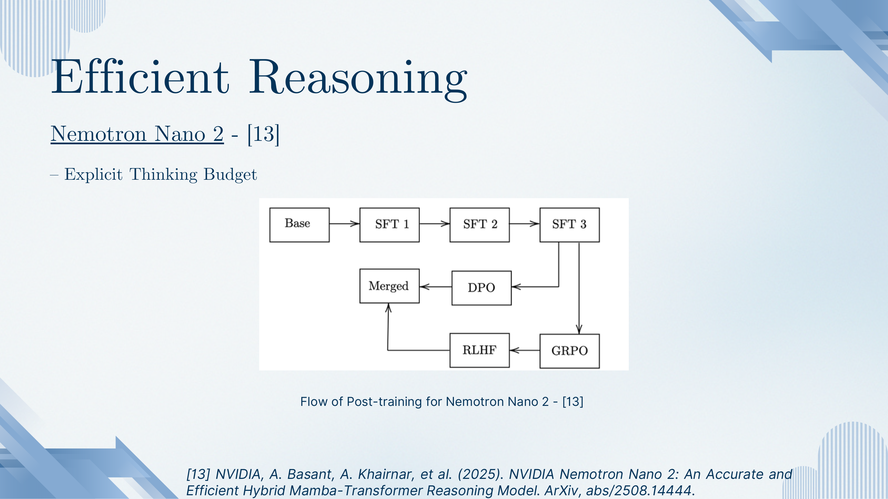
On the slide
NVIDIA's Nemotron Nano 2. Post-training goes through three SFT stages, then GRPO, then RLHF, then DPO, then a merge. Selling point: an explicit thinking budget that the user can dial at inference.
Why the many stages
Each stage teaches something different: format, then behaviour, then reasoning quality (GRPO), then preference alignment (RLHF), then final refinement (DPO). Stacking them is common in production LM training now — no single algorithm covers everything you want the model to do.
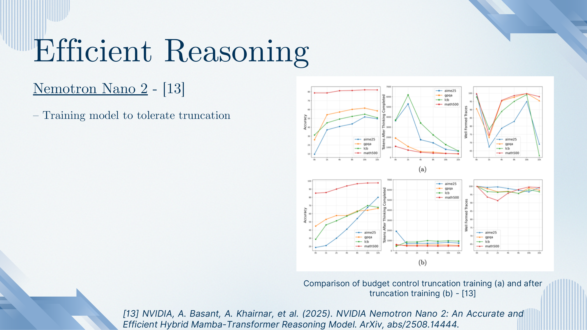
On the slide
Six-panel ablation. Row (a): a model with no truncation training. When you cut its budget short it either keeps generating long thoughts (top-middle plot) or produces malformed traces (top-right). Row (b): after truncation training. The model actually stops when the budget is up (middle plot flat near zero extra tokens) and its trace format stays clean (right plot near 100%).
What to take from it
Budget compliance isn't free — the model has to be trained to tolerate having its thinking cut off. If you just clamp the max tokens at inference on a model that wasn't trained this way, you often get garbled output. This is one of those small but crucial engineering details that separates a reasoning model that's usable from one that looks great in a paper but explodes in production.
§10Recent advances, references and resources
The last five slides sketch where the field is going next (agentic, multimodal, latent reasoning via looped transformers) and list the papers and tutorials the seminar drew on.
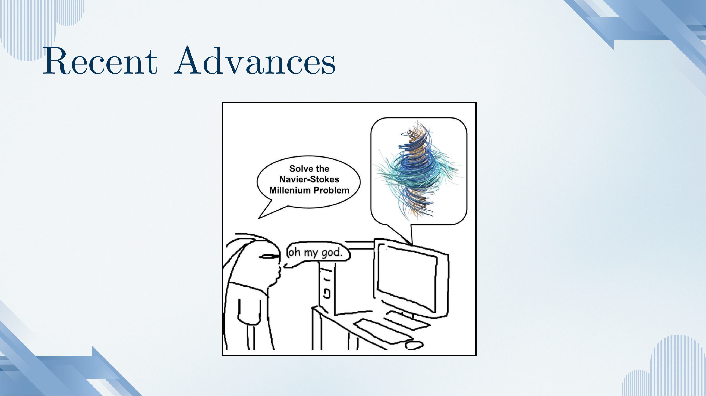
On the slide
Section marker for recent advances, with a cartoon: user asks the LM to solve Navier–Stokes; LM answers with a picture of turbulence.
What to take from it
The joke: for problems humans can't yet solve, we can't even tell whether a model's answer is right. That's part of why reward design is going to keep getting harder — the field of "verifiable reward" runs out at the frontier of open problems.
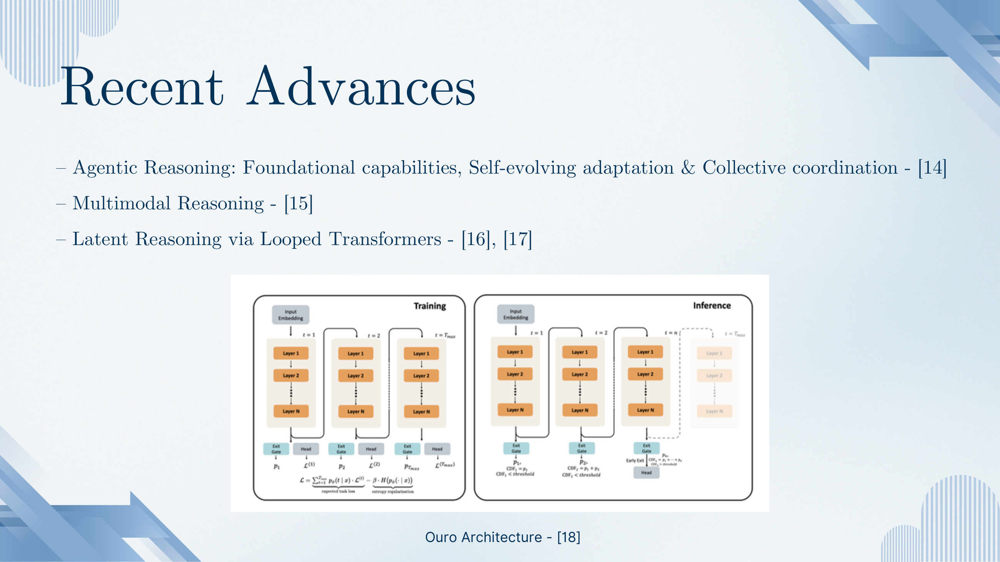
On the slide
Three research directions:
- Agentic reasoning. LMs that plan, call tools, and coordinate with other LMs.
- Multimodal reasoning. Reasoning grounded in images, video, or other non-text modalities.
- Latent reasoning via looped transformers. Instead of writing thoughts out as tokens, run the same layers multiple times internally and let an early-exit gate decide when to stop. Ouro's architecture is the pictured example.
Why looped transformers matter
Every method in this deck up to now uses textual chain-of-thought — thinking-as-tokens. That's expensive (KV cache grows) and lossy (the residual stream has to be projected back down to tokens each step). Looped transformers keep the "thoughts" inside the residual stream, iterating layers rather than emitting tokens. If it works at scale, it's a genuine reframing of what "reasoning" means in an LM.
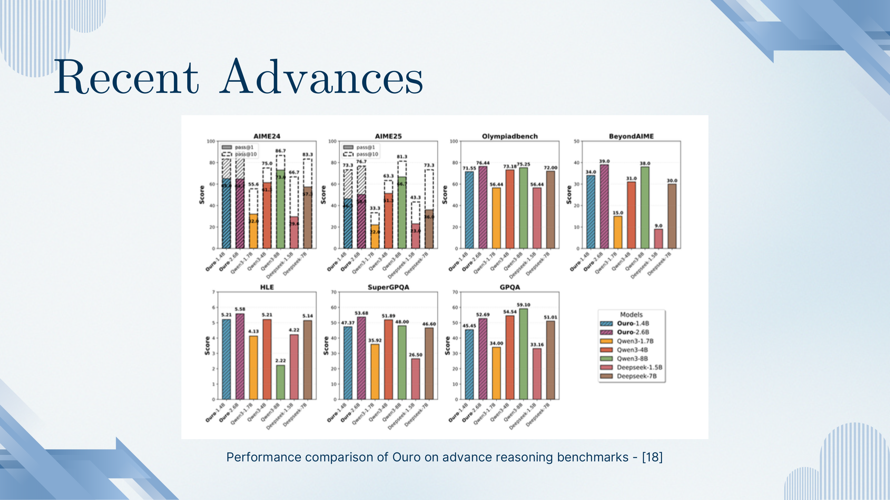
On the slide
Ouro's small looped models (1.4B, 2.6B) against Qwen3 (1.7B / 4B / 8B) and DeepSeek (1.5B / 7B) on seven reasoning benchmarks. Ouro-2.6B is competitive with, and sometimes ahead of, models 3× its size.
What to take from it
If latent-loop reasoning holds up under further study, it could shift the compute-vs-quality frontier the same way chain-of-thought did in 2022 — trading extra sequential compute for depth of reasoning, but without paying for it in tokens. Worth watching.
Zoom out from this whole deck and the arc is clear: (1) discover reasoning as a prompting trick; (2) bake it into weights via SFT on filtered traces; (3) reward it explicitly via RL; (4) make the RL more efficient (RLOO, GRPO); (5) make the reasoning itself more efficient (budgets, thinking modes); (6) explore whether reasoning even needs to be textual at all. Each step keeps the previous ones and adds a new dimension.
![References list: [14] Wei et al. 2026 Agentic Reasoning for LLMs; [15] Lin et al. 2025 Mind with Eyes (multimodal); [16] Dehghani et al. 2018 Universal Transformers; [17] Fan, Svete, Lee 2026 Bridging Latent and Explicit Reasoning with Looped Transformers; [18] Zhu et al. 2025 Scaling Latent Reasoning via Looped Language Models; [19] DeepSeek-AI 2025 DeepSeek-R1; [20] Huang & Chang 2023 Towards Reasoning in LLMs: A Survey; [21] Xu et al. 2025 Towards Large Reasoning Models: A Survey of Reinforced Reasoning.](../assets/seminars/S-reasoning/slide-44.png)
On the slide
References for the recent-advances section: agentic reasoning surveys, multimodal reasoning, universal / looped transformers, DeepSeek-R1, and two survey papers on reasoning in LMs.
Reading order
If you're getting into this area from scratch, the two surveys ([20] Huang & Chang, [21] Xu et al.) are the obvious starting point. DeepSeek-R1 ([19]) is the paper behind slide 35's pipeline and is worth reading in full. The looped-transformers papers ([16]–[18]) are the speculative bet.
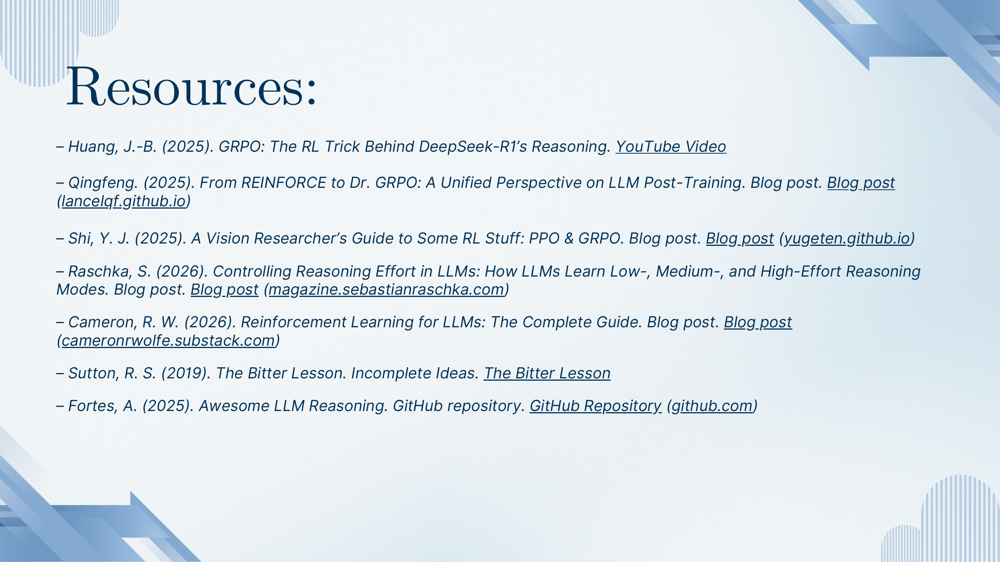
On the slide
A collection of blog posts, videos and repositories that teach the same material in different registers — from a vision researcher's guide to PPO/GRPO to Sebastian Raschka's tutorials on controlling reasoning effort.
What to take from it
Reading the papers on this deck alone will teach you the formal picture. Reading the blog posts will teach you the engineering picture — which loss weights matter, how the reward signal looks in a real training log, what breaks first, and why. The two together are how you get from knowing the equations to knowing the algorithm.
Reasoning in LMs = elicit intermediate steps (chain-of-thought), train the model to produce good ones (SFT on filtered traces / STaR), and reward it for producing better ones (REINFORCE → TRPO → PPO → RLHF → RLOO → GRPO). Everything after that is efficiency (budget, thinking modes) and exploration of alternatives to textual thought (looped transformers).
A last word. This was a student-led survey, not a canonical reference — the point was to draw the family tree of reasoning methods and show how each node fixes a problem in its parent. The single most-important idea to walk away with is the reward-weighted log-prob gradient: once you see that REINFORCE, PPO, RLHF, RLOO and GRPO are all versions of the same one-line update — with different choices of scalar weight and different regularisers — the RL-for-LMs literature becomes a lot smaller.